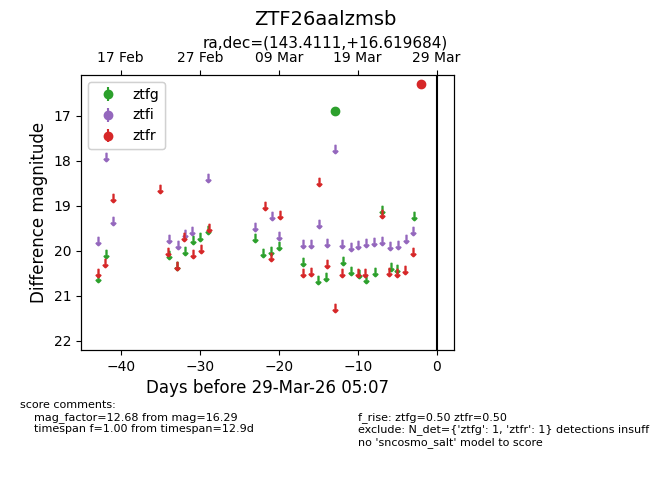
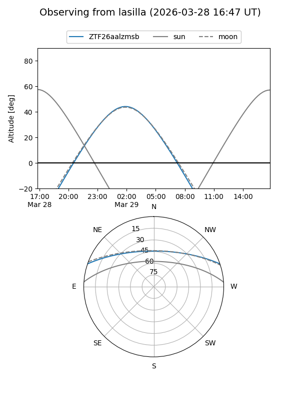
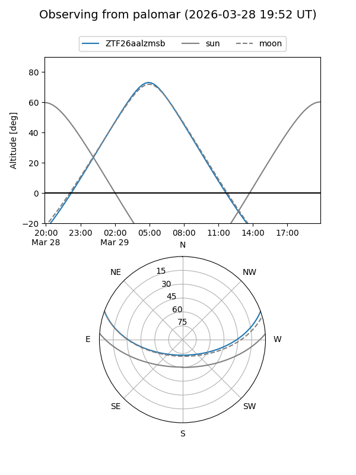

ZTF26aalzmsb
Target ZTF26aalzmsb at 2026-03-29 05:10
Aliases and brokers:
FINK: link
Lasair: link
ALeRCE: link
alt names
ZTF26aalzmsb (ztf,fink_ztf)
Coordinates:
equatorial (ra, dec) = 143.4111,+16.61968
equatorial (HMS+DMS) = 09:33:38.65,+16:37:10.86
galactic (l, b) = (215.2532,+43.22441)
Flags:
Photometry:
last ztfg=16.89, ztfr=16.29
1 ztfg, 1 ztfr detections
Lightcurve

Visibility


Additional plots